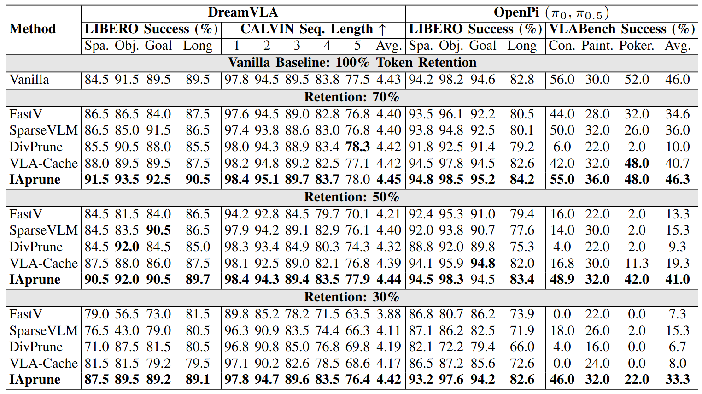
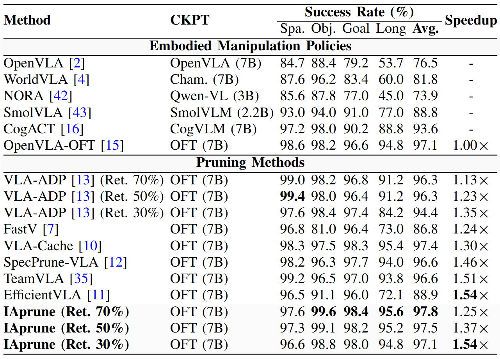
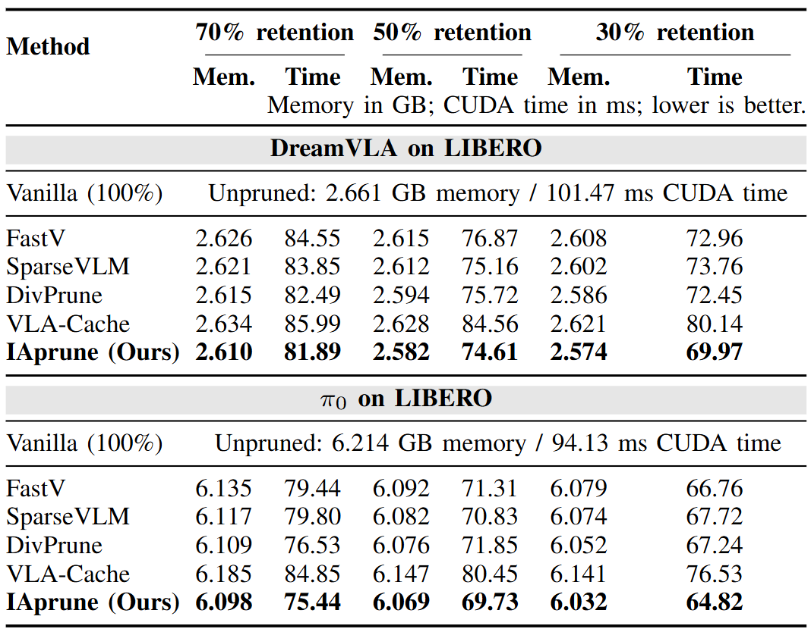

Abstract
Efficient visual representation is a central image-processing challenge in embodied manipulation, where policies repeatedly process dense visual-token sequences during closed-loop control. Existing methods rank or prune tokens using semantic relevance, VLM attention, cross-frame redundancy, or motion in the action space, but these signals may discard task-relevant regions when instruction-related appearance and observed image motion are not yet spatially aligned. We introduce Interaction-Aligned Pruning (IAprune), a training-free method that treats per-frame budget setting and within-budget token selection as two linked decisions. Semantic-motion spatial agreement guides the choice between Conservative and Aggressive coverage, while continuous semantic and motion responses rank existing tokens and geometric residual correction redirects fixed selection slots toward under-represented boundaries without increasing sequence length. Across four embodied manipulation policies, three simulation benchmarks, and a real-robot platform, IAprune provides a favorable accuracy-efficiency trade-off, matching the unpruned policy on LIBERO with a 1.54× speedup and reaching 1.48× acceleration on a real robot.

Overview of IAprune. Semantic and motion evidence serve two complementary roles: their spatial agreement selects a Conservative or Aggressive coverage mode, while their continuous responses define the base relevance of each visual token. The selected mode defines a provisional region whose size is converted into a dynamic per-frame budget under a target average retention ratio. Geometric evidence then performs budget-preserving structural reallocation through residual correction without changing the token budget. The resulting compact visual sequence is fed into the unchanged embodied manipulation policy for action generation.
Experiments
Overall Performance

Evaluation benchmarks and tasks. The simulation evaluation includes LIBERO, VLABench, and CALVIN ABC-D. The real-world evaluation covers simple, long-horizon, and dual-arm manipulation.
Comprehensive Performance Comparison

Comprehensive Performance Comparison. Success rates are reported on LIBERO and VLABench, and average sequence length is reported on CALVIN at nominal retention labels of 30%, 50%, and 70%. For IAprune, these labels denote target average retention ratios.
OpenVLA-OFT Results on LIBERO Benchmark

LIBERO Results. Representative embodied manipulation policies are included for context. All pruning methods use the OFT 7B backbone, and speedup is reported relative to the unpruned OpenVLA-OFT policy.
Memory and Runtime Analysis

Memory and Runtime on LIBERO. Peak GPU memory and per-step CUDA runtime are reported at nominal retention labels of 70%, 50%, and 30%. For IAprune, these labels denote the target average retention ratio; baseline labels follow their original budget definitions.
Rollouts of IAprune
LIBERO
Spatial-Comparison
Object-Comparison
Goal-Comparison
Long-Comparison
Spatial (Baseline)
Object (Baseline)
Goal (Baseline)
Long (Baseline)
Spatial (IAprune)
Object (IAprune)
Goal (IAprune)
Long (IAprune)
VLABench
Add Condiment (Baseline)
Select Poker (Baseline)
Select Chemitry tube (Baseline)
Add Condiment (IAprune)
Select Poker (IAprune)
Select Chemistry tube (IAprune)
CALVIN
Full Sequence
Open Drawer (Baseline)
Lift Red Block (Baseline)
Open Drawer (IAprune)
Lift Red Block (IAprune)
Real-World
Bread Simple
Dual Arm (Baseline)
Dual Arm (IAprune)
Bread Long (Baseline)
Bread Long (IAprune)
BibTeX
@article{cheng2026iaprune,
title={Training-Free Interaction-Aligned Visual Token Pruning for Efficient Embodied Manipulation},
author={Cheng, Jintao and Li, Weibin and Wang, Haozhe and Wang, Gang and Zhang, Yipu and Tang, Xiaoyu and Wu, Jin and Chen, Xieyuanli and Liu, Yunhui and Zhang, Wei},
journal={arXiv preprint arXiv:2603.22991},
year={2026}
}